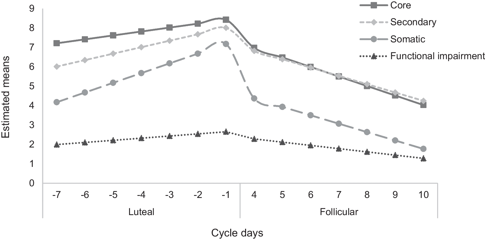

Página 1 · Síndrome pré-menstrual e síndrome disfórica pré-menstrual
Sintoma quase toda mulher tem. Síndrome, poucas. E o extremo, pouquíssimas
A banca adora trocar a dona de cada número.
A base que fecha os dois diagnósticos no consultório responde à maioria das questões; detalhe fino de especialista existe e não desmonta ninguém.
Sintoma, síndrome e transtorno: três camadas, três ordens de grandeza
Sentir alguma coisa antes de menstruar é quase a regra: até 90% das mulheres em idade reprodutiva relatam pelo menos um sintoma pré-menstrual. Preencher critério de síndrome pré-menstrual é bem mais restrito — 20 a 30% (no Brasil, o Ministério da Saúde trabalha com uma faixa mais larga, 20 a 50%). E o extremo, o transtorno disfórico pré-menstrual, fica em 2 a 5% (o DSM-5-TR registra 1,8 a 5,8% em doze meses). São três camadas da mesma constelação de sintomas, separadas por quanto se exige para chamá-la de doença. Guarde a consequência, porque ela é o ponto: a síndrome pré-menstrual é 6 a 10 vezes mais frequente que a disfórica.
O que caracteriza o quadro: cíclico, recorrente e com hora marcada
Um contingente grande de mulheres apresenta sintomas físicos, cognitivos e comportamentais caracteristicamente antes do período menstrual. Três atributos definem o quadro e valem mais que qualquer lista: os sintomas são cíclicos (voltam a cada ciclo), recorrentes (não é evento isolado) e aparecem numa fase específica — caracteristicamente a fase lútea, a segunda metade do ciclo. É essa ancoragem temporal que separa o quadro pré-menstrual de qualquer outro sofrimento físico ou emocional: um sintoma que existe o mês inteiro, ou que aparece em qualquer ponto do calendário, não é pré-menstrual — é outra coisa.
O que transforma sintoma em doença: os quatro domínios de impacto
Sentir não basta para nomear e tratar. O que justifica dar nome ao quadro é o impacto negativo em quatro frentes: funcionamento diário, relações pessoais, relações profissionais e qualidade de vida. É esse impacto que sustenta a necessidade de diagnóstico precoce e de uma intervenção que devolva qualidade de vida. Repare na consequência prática: diante de uma paciente que traz sintomas físicos, cognitivos e comportamentais, o que se examina não é a lista — é o grau de interferência. A lista de sintomas é praticamente a mesma nas duas formas.
Duas formas clínicas, uma só constelação de sintomas
Observar essas pacientes permite distinguir duas formas clínicas muito claras. De um lado, sintomas leves a moderados, com menor interferência na vida — é a síndrome pré-menstrual propriamente dita. De outro, sintomas mais graves, com repercussão importante na qualidade de vida e nas relações interpessoais e profissionais — é a síndrome disfórica pré-menstrual, também chamada transtorno disfórico pré-menstrual. Os dois termos valem para a mesma entidade, e a banca usa os dois. Essa forma grave é descrita como o extremo mais grave e incapacitante dos transtornos menstruais.
Onde cada uma mora: 7 a 10 dias × ~14 dias — e a semana que o critério conta
A primeira coisa a memorizar é onde cada uma começa. Na síndrome pré-menstrual, os sintomas se manifestam poucos dias antes do fluxo — em torno de 7 a 10 dias, com menor interferência. No outro extremo, os sintomas mais intensos costumam começar em torno de 14 dias antes da menstruação, ocupando praticamente toda a fase lútea. Aqui mora uma distinção que decide questão: esses "~14 dias" descrevem a janela em que os sintomas podem se estender na forma grave — que é, não por acaso, a mesma janela em que se dosa o inibidor de recaptação intermitente (dias 15 a 28). A janela que o critério do transtorno disfórico conta é outra: a semana final antes do fluxo, onde é preciso ter cinco ou mais sintomas. Janela de sintoma e janela de critério não são a mesma coisa, e quem confunde as duas erra a alternativa. Nenhuma diretriz crava "7 a 10 dias" para a síndrome pré-menstrual: a redação canônica é "semana anterior à menstruação", e o critério operacional conta os 5 dias que antecedem. Se a banca pedir o número do critério, o número é 5.
O marco que fecha as duas: o primeiro dia do fluxo (e o que "cessar" significa de verdade)
Existe um marco que encerra as duas formas, e ele é o divisor temporal mais cobrado do tema: os sintomas cessam a partir do primeiro dia do ciclo. O início do fluxo é a linha que corta as duas janelas. No rigor das fontes, o alívio começa com o fluxo e se completa logo depois: os sintomas ficam mínimos ou ausentes em até cerca de 4 dias (ou na semana pós-menstrual) e — detalhe cobrável — não recorrem até pelo menos o dia 12 ou 13 do ciclo. Ou seja: não é um interruptor que desliga no dia 1, é uma queda que começa no dia 1 e se completa em poucos dias, seguida de um intervalo livre até a metade do ciclo seguinte. Por fim, uma consequência operacional: a janela dos sintomas é uma posição na segunda metade do ciclo. Saber datar a fase lútea é o que permite localizar, no calendário da paciente, onde cada síndrome começa e onde as duas terminam.
A faixa lútea onde as duas janelas moram está mapeada em A Linha do Ciclo — serve aqui apenas para localizar a segunda metade do ciclo.

Em diário prospectivo por dois ciclos, os sintomas e o prejuízo funcional atingem o máximo no fim da fase lútea e caem entre os dias 4 e 10 após o início da menstruação. Leia cada curva longitudinalmente: sintomas centrais — labilidade afetiva, irritabilidade, humor depressivo e ansiedade/tensão —, sintomas psicológicos secundários, manifestações somáticas e prejuízo funcional sobem de D−7 até D−1; na janela folicular, entre D+4 e D+10, todos os domínios diminuem. Esse padrão temporal favorece um transtorno pré-menstrual verdadeiro; o principal confundível é a exacerbação pré-menstrual de depressão ou ansiedade preexistente, em que há piora lútea mas permanece sintomatologia basal relevante na fase folicular. Limitação nomeada: os dias 0–3 não foram plotados, de modo que a figura demonstra remissão já evidente em D+4 mas não mede a velocidade da queda nas primeiras 72 horas; as alturas absolutas entre curvas também não devem ser comparadas, pois representam conjuntos diferentes de itens.
Nayman S, Konstantinow DT, Schricker IF, Reinhard I, Kuehner C. Associations of premenstrual symptoms with daily rumination and perceived stress and the moderating effects of mindfulness facets on symptom cyclicity in premenstrual syndrome. Archives of Women's Mental Health. 2023;26:167–176, Figure 1. Licenciada sob CC BY 4.0. Sem alterações. Fonte: doi.org/10.1007/s00737-023-01304-5.
Quiz — fixação
Uma paciente relata, todos os meses, irritabilidade, mastalgia e distensão abdominal que começam 7 a 10 dias antes da menstruação e desaparecem com o início do fluxo. Esses sintomas são característicos de qual fase do ciclo?
- Gabarito C. A janela de 7 a 10 dias que antecede o fluxo cai integralmente na segunda metade do ciclo, ou seja, na fase lútea — e é justamente por isso que os sintomas cessam a partir do 1º dia.
- A. a fase folicular precoce é o começo do ciclo, logo após a menstruação: é o intervalo em que a paciente está livre de sintomas (sem recorrência até o dia 12-13).
- B. a fase ovulatória é o meio do ciclo, o divisor entre as duas metades — a janela sintomática começa depois dela, não nela.
- D. a fase menstrual é quando o quadro acaba, não quando começa; confundir as duas inverte o marco de resolução.
- Por que cair na (D). o aluno associa "sintoma que tem a ver com menstruação" a "fase menstrual", quando o traço definidor é justamente ser pré-menstrual.
- Detalhe de técnica. se o enunciado tiver dito que a síndrome "chega a 80% das mulheres", esse número superestima a frequência da síndrome com critério (20-30%) — mas faz-se vista grossa, porque ele não interfere na resposta. Ler questão é separar o dado que decide do dado que só enfeita.
Sobre a prevalência dos distúrbios pré-menstruais em mulheres em idade reprodutiva, a alternativa correta é:
- Gabarito B. É a hierarquia consagrada: até 90% têm sintoma, 20-30% têm síndrome com critério (o Ministério da Saúde trabalha com 20-50%) e 2-5% têm o transtorno disfórico.
- A. joga a faixa de um dígito no lugar do sintoma isolado, quando ela é do transtorno — e sintoma isolado é quase universal, não raro.
- C. é a conflação clássica: cola os 3-8% na síndrome pré-menstrual e espreme o transtorno para menos de 1%; nenhuma fonte sustenta esse par, e ele contradiz o próprio dado de que a síndrome é muito mais frequente que a disfórica.
- D. inverte a lógica inteira: o transtorno disfórico é mais exigente (cinco sintomas, registro prospectivo, exclusão psiquiátrica) e, por isso, mais raro — 6 a 10 vezes mais raro.
- Por que cair na (C). a faixa "3 a 8%" circula muito associada à sigla mais conhecida, e o aluno a memoriza sem dono; a âncora que salva é lembrar que ela nasceu da diferença entre transtorno disfórico confirmado (3,2%) e provisório (7,7%).
Se os sintomas têm hora marcada e vão embora com o sangue, alguma coisa nessa fase do ciclo os produz. A causa exata ninguém desvendou — mas dois suspeitos da lista já pagam o tratamento inteiro.